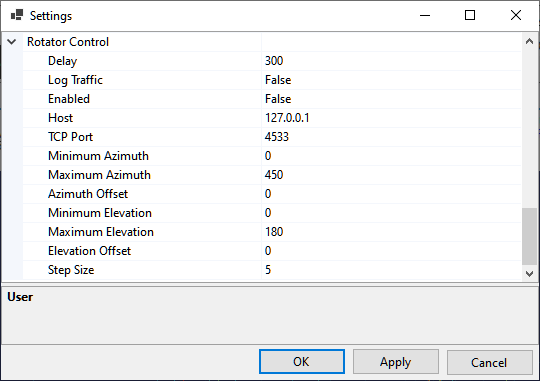

Setting Up Rotator Control
rotctld.exe
SkyRoof uses rotctld.exe, a HamLib-based rotator control daemon, to control the antenna rotator. See the Setting Up CAT Control section for the instructions how to download and install HamLib.
Create a shortcut to start *rotctld.exe, with command line arguments:
The arguments on the command line must be tailored for your specific rotator and COM port settings. Refer to the rotctld documentation for a complete description of the arguments.
Assuming that HamLib is installed in the default location, here is an example string for the shortcut:
"C:\Program Files\hamlib-w64-4.5.5\bin\rotctld.exe" -m 601 -r COM12 -s 9600
In the string above the following arguments are used:
- -m 601 - the rotator model is Yaesu GS-232A;
- -r COM12 - the COM port used by the rotator;
- -s 9600 - the COM port speed.
Run rotctld.exe using this shortcut before you enable rotator control in SkyRoof.
Settings
Click on Tools / Settings in the main menu to open the Settings dialog:

- Delay determines how often SkyRoof sends commands to the rotator. The default delay is 300 ms;
- Log Traffic should be set to False and enabled only for debugging;
- Enabled - enable or disable rotator control. Another way to toggle the rotator control is to click on the Rotator label on the status bar;
- Host - should be "127.0.0.1" or "localhost" if rotctld is running on the same computer as SkyRoof. It may be changed to a different address for remote control;
- TCP Port - 4533 is the default port used by rotctld;
- Minimum Azimuth, Maximum Azimuth, Minimum Elevation, Maximum Elevation - specify the range of values your rotator accepts;
- Azimuth Offset, Elevation Offset - if your rotator is not perfectly calibrated, these settings allow you to apply a correction;
- Step Size - to prevent the rotator from starting and stopping too often, change the bearing only when the required change is greater than the step size. The default value is 5 degrees.
If your rotator does not control elevation, set the MinimumElevation and MaximumElevation to the same value. With such settings, wrong elevation will not be considered a bearing error. Note that the bearing error is indicated with a pink color on the Rotator Control panel.